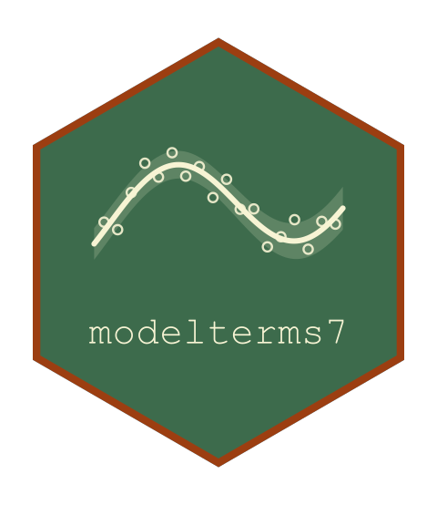

The Profile of One Break-Point Over Every Interval
Source:R/seg_hold.R
seg_profile_intervals.RdThe least-squares profile of a sharp seg(), jump() or jseg() term in
one of its break-points, the others held where they are: the residual sum
of squares in every interval between consecutive distinct values of the
covariate inside the confinement limits, at the midpoint for a change of
level and at the minimizing position for a change of slope. It is the quantity
seg_polish_exact() minimizes, returned whole so that a caller whose
objective the profile only approximates can take several candidates from
it.
Arguments
- term
A built break-point term (see
term_build()).- y
A numeric vector, one value per observation of the build data: the response, net of whatever the caller wants held.
- k
Which break-point, an integer.
- weights
Optional non-negative weights, one per observation; the profile is then weighted least squares.
Value
A data frame with columns psi, the position in each interval,
and rss, the profile there (Inf where the design is singular).
Examples
set.seed(1)
dd <- data.frame(x = sort(runif(200, 0, 10)))
dd$y <- 1 + 1.5 * (dd$x > 6) + rnorm(200, sd = 0.4)
b <- term_build(jump(x, psi = 4), dd)
pr <- seg_profile_intervals(b, dd$y)
pr$psi[which.min(pr$rss)]
#> [1] 6.005535